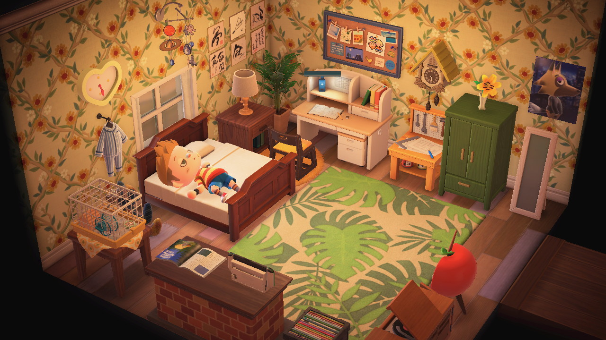

all from 2020. my island is named "nowhere" and is heavily mother 3 inspired. i don't play acnh at all anymore, but these photos made me pretty nostalgic... too bad it's not as fun to play it as it is to reminisce on it. my dream address is here, if you'd like to check it out.
|
||
|  | ||
|